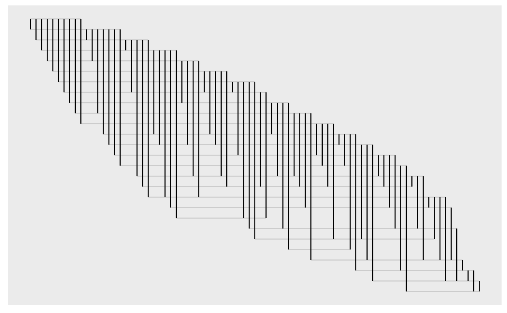
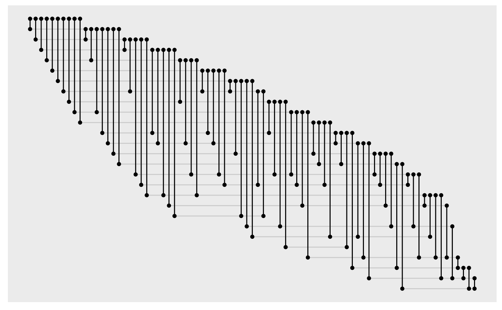
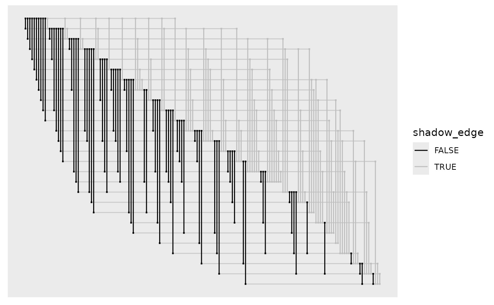

This edge geom is mainly intended for use with fabric
layouts. It draws edges as vertical segments with an optional end shape
adornment. Due to the special nature of fabric layouts where nodes are not
a single point in space but a line, this geom doesn't derive the x position
from the location of the terminal nodes, but defaults to using the edge_x
variable calculated by the fabric layout. If this geom is used with other
layouts xand xend must be given explicitly.
geom_edge_span(
mapping = NULL,
data = get_edges("short"),
position = "identity",
end_shape = NA,
arrow = NULL,
n = 100,
lineend = "butt",
linejoin = "round",
linemitre = 1,
label_colour = "black",
label_alpha = 1,
label_parse = FALSE,
check_overlap = FALSE,
angle_calc = "rot",
force_flip = TRUE,
label_dodge = NULL,
label_push = NULL,
show.legend = NA,
...
)
geom_edge_span2(
mapping = NULL,
data = get_edges("long"),
position = "identity",
end_shape = NA,
arrow = NULL,
n = 100,
lineend = "butt",
linejoin = "round",
linemitre = 1,
label_colour = "black",
label_alpha = 1,
label_parse = FALSE,
check_overlap = FALSE,
angle_calc = "rot",
force_flip = TRUE,
label_dodge = NULL,
label_push = NULL,
show.legend = NA,
...
)
geom_edge_span0(
mapping = NULL,
data = get_edges(),
position = "identity",
end_shape = NA,
arrow = NULL,
lineend = "butt",
show.legend = NA,
...
)Set of aesthetic mappings created by ggplot2::aes()
or ggplot2::aes_(). By default x, y, xend, yend, group and
circular are mapped to x, y, xend, yend, edge.id and circular in the edge
data.
The return of a call to get_edges() or a data.frame
giving edges in correct format (see details for for guidance on the format).
See get_edges() for more details on edge extraction.
Position adjustment, either as a string naming the adjustment
(e.g. "jitter" to use position_jitter), or the result of a call to a
position adjustment function. Use the latter if you need to change the
settings of the adjustment.
The adornment to put at the ends of the span. The naming
follows the conventions of the shape aesthetic in ggplot2::geom_point()
Arrow specification, as created by grid::arrow().
The number of points to create along the path.
Line end style (round, butt, square).
Line join style (round, mitre, bevel).
Line mitre limit (number greater than 1).
The colour of the edge label. If NA it will use
the colour of the edge.
The opacity of the edge label. If NA it will use
the opacity of the edge.
If TRUE, the labels will be parsed into expressions
and displayed as described in grDevices::plotmath().
If TRUE, text that overlaps previous text in the
same layer will not be plotted. check_overlap happens at draw time and in
the order of the data. Therefore data should be arranged by the label
column before calling geom_text(). Note that this argument is not
supported by geom_label().
Either 'none', 'along', or 'across'. If 'none' the label will use the angle aesthetic of the geom. If 'along' The label will be written along the edge direction. If 'across' the label will be written across the edge direction.
Logical. If angle_calc is either 'along' or 'across'
should the label be flipped if it is on it's head. Default to TRUE.
A grid::unit() giving a fixed vertical shift
to add to the label in case of angle_calc is either 'along' or 'across'
A grid::unit() giving a fixed horizontal shift
to add to the label in case of angle_calc is either 'along' or 'across'
logical. Should this layer be included in the legends?
NA, the default, includes if any aesthetics are mapped.
FALSE never includes, and TRUE always includes.
It can also be a named logical vector to finely select the aesthetics to
display.
Other arguments passed on to layer(). These are
often aesthetics, used to set an aesthetic to a fixed value, like
colour = "red" or size = 3. They may also be parameters
to the paired geom/stat.
geom_edge_span and geom_edge_span0 understand the following
aesthetics. Bold aesthetics are automatically set, but can be overridden.
x
y
xend
yend
edge_colour
edge_width
edge_linetype
edge_alpha
filter
geom_edge_span2 understand the following aesthetics. Bold aesthetics are
automatically set, but can be overridden.
x
y
group
edge_colour
edge_width
edge_linetype
edge_alpha
filter
geom_edge_span and geom_edge_span2 furthermore takes the following
aesthetics.
start_cap
end_cap
label
label_pos
label_size
angle
hjust
vjust
family
fontface
lineheight
The position along the path (not computed for the *0 version)
Many geom_edge_* layers comes in 3 flavors depending on the level of control
needed over the drawing. The default (no numeric postfix) generate a number
of points (n) along the edge and draws it as a path. Each point along
the line has a numeric value associated with it giving the position along the
path, and it is therefore possible to show the direction of the edge by
mapping to this e.g. colour = after_stat(index). The version postfixed with a
"2" uses the "long" edge format (see get_edges()) and makes it
possible to interpolate node parameter between the start and end node along
the edge. It is considerable less performant so should only be used if this
is needed. The version postfixed with a "0" draws the edge in the most
performant way, often directly using an appropriate grob from the grid
package, but does not allow for gradients along the edge.
Often it is beneficial to stop the drawing of the edge before it reaches the
node, for instance in cases where an arrow should be drawn and the arrowhead
shouldn't lay on top or below the node point. geom_edge_* and geom_edge_*2
supports this through the start_cap and end_cap aesthetics that takes a
geometry() specification and dynamically caps the termini of the
edges based on the given specifications. This means that if
end_cap = circle(1, 'cm') the edges will end at a distance of 1cm even
during resizing of the plot window.
All geom_edge_* and geom_edge_*2 have the ability to draw a
label along the edge. The reason this is not a separate geom is that in order
for the label to know the location of the edge it needs to know the edge type
etc. Labels are drawn by providing a label aesthetic. The label_pos can be
used to specify where along the edge it should be drawn by supplying a number
between 0 and 1. The label_size aesthetic can be used to control the size of
the label. Often it is needed to have the label written along the direction
of the edge, but since the actual angle is dependent on the plot dimensions
this cannot be calculated beforehand. Using the angle_calc argument allows
you to specify whether to use the supplied angle aesthetic or whether to draw
the label along or across the edge.
In order to avoid excessive typing edge aesthetic names are
automatically expanded. Because of this it is not necessary to write
edge_colour within the aes() call as colour will
automatically be renamed appropriately.
Other geom_edge_*:
geom_edge_arc(),
geom_edge_bend(),
geom_edge_density(),
geom_edge_diagonal(),
geom_edge_elbow(),
geom_edge_fan(),
geom_edge_hive(),
geom_edge_link(),
geom_edge_loop(),
geom_edge_parallel(),
geom_edge_point(),
geom_edge_tile()
require(tidygraph)
gr <- play_smallworld(n_dim = 3, dim_size = 3, order = 1, p_rewire = 0.6)
# Standard use
ggraph(gr, 'fabric', sort.by = node_rank_fabric()) +
geom_node_range(colour = 'grey80') +
geom_edge_span()

# Add end shapes
ggraph(gr, 'fabric', sort.by = node_rank_fabric()) +
geom_node_range(colour = 'grey80') +
geom_edge_span(end_shape = 'circle')

# If the layout include shadow edges these can be styled differently
ggraph(gr, 'fabric', sort.by = node_rank_fabric(), shadow.edges = TRUE) +
geom_node_range(colour = 'grey80') +
geom_edge_span(aes(colour = shadow_edge), end_shape = 'square') +
scale_edge_colour_manual(values = c('FALSE' = 'black', 'TRUE' = 'grey'))
